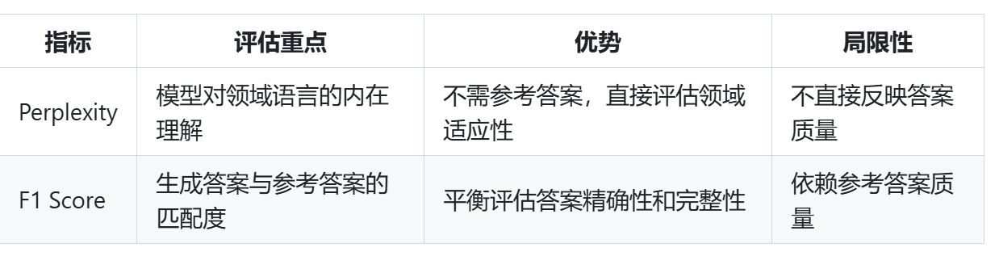

团队里面的 产品经理主要负责哪些工作？
负责需求收集、功能规划和用户反馈处理。
构建一个RAG系统并进行微调的流程大致是什么？
- 模型微调阶段：首先使用LoRA对基础LLM(如LLaMA)进行微调，提高模型的指令遵循能力和特定领域知识。这一步可以帮助模型更好地适应下游任务，尤其是在RAG任务中从检索到的上下文中提取答案的能力。
- RAG系统构建：将微调后的LLM集成到RAG架构中，实现"检索-重排-生成"的流程。这包括:
- 构建检索系统
- 集成微调后的LLM
- 实现上下文处理机制
- RAG系统微调：使用QCA(问题+上下文+答案)格式的数据集对整个RAG系统进行进一步优化。这一步可以提升系统在上下文排序和答案生成方面的表现。
目前主流的LoRA微调数据集分别是收集垂直领域QA对 以及 生成QCA三元组，
其中，生成QCA三元组，核心思想是什么？
其中，生成QCA三元组，核心思想是什么？
循环迭代的方式构建数据集。
在您的RAG系统中，Function Call机制 涉及到复杂计算处理，包括哪三方面？
房贷计算、租金回报率 以及 汇率转换。
LoRA 数据格式有哪两种？
对话格式以及指令格式。
Perplexity和F1 Score ，评估重点，优势，局限性 分别是什么？

利用 Hugging Face 的 哪个库构造 QLoRA 配置。
我设定了低秩矩阵的秩数是多少？和更新策略。
我设定了低秩矩阵的秩数是多少？和更新策略。
- 利用 Hugging Face 的 PEFT 库构造 QLoRA 配置。在这一阶段，我设定了低秩矩阵的秩数（例如 r=8r=8）和更新策略，通常选择仅针对 Transformer 模型中的注意力模块或全部线性层进行参数更新，以避免灾难性遗忘，同时确保适应目标任务。
EM的优缺点 分别是什么？
优点是，
简单直观：容易理解和实现
计算效率：计算速度快，不需要复杂算法
缺点是，
过于严格：即使答案语义相同但表述不同也会被判为不匹配
简单直观：容易理解和实现
计算效率：计算速度快，不需要复杂算法
缺点是，
过于严格：即使答案语义相同但表述不同也会被判为不匹配
LoRA的三个步骤是什么？
- 冻结原始权重：保持预训练模型的权重不变
- 添加低秩适应矩阵：为每个需要微调的权重矩阵W添加一个低秩分解：ΔW = A × B
- A是一个d×r的矩阵
- B是一个r×k的矩阵
- r是秩，通常远小于d和k
- 最终权重：W' = W + ΔW = W + A × B
默认情况下，LoRA仅在哪里启用？但可以扩展到哪里？
在多头自注意力块中的键(Key)和查询(Query)矩阵上启用，但可以扩展到：
- 值(Value)矩阵
- 投影层
- 线性层
QLoRA 使用什么样的数据格式以及每一行代表什么？
使用JSON或JSONL格式存储数据，每一行代表一个完整的对话或样本。
RAGAS框架实际上包含多个评估维度，分别是什么以及什么含义？
- Answer Relevance：回答与问题的相关性
- Answer Correctness：回答的事实准确性
- Context Precision：检索文档的精确度
- Context Recall：检索文档的召回率
- Faithfulness：回答对检索内容的忠实度

A10G 配备 多少显存？
24GB 。
QLoRA（Quantized Low-Rank Adaptation）是结合什么和什么的微调技术？
一种结合量化和低秩适配器的微调技术。
无论是QLoRA还是LoRA微调，数据格式的核心要求都是明确区分什么和什么，保证模型能够正确理解什么？
输入（提示或指令）与输出（回复或答案），理解任务上下文。
默认情况下，LoRA微调的时候学习率 和 dropout分别的设置是什么？
- 常用学习率为3e-4
- LoRA dropout通常设置为0.05
QLoRA 配置 为什么通常选择仅针对 Transformer 模型中的注意力模块或全部线性层进行参数更新？
避免灾难性遗忘，同时确保适应目标任务。
如何使用QLoRA进行微调？【4步骤】
- 首先，我使用 bitsandbytes 库将预训练模型加载为 4-bit 量化格式，显著降低了 GPU 内存占用，从而使得在有限显存资源下微调成为可能。
- 接着，利用 Hugging Face 的 PEFT 库构造 QLoRA 配置。在这一阶段，我设定了低秩矩阵的秩数（例如 r=8r=8）和更新策略，通常选择仅针对 Transformer 模型中的注意力模块或全部线性层进行参数更新，以避免灾难性遗忘，同时确保适应目标任务。
- 然后，我准备了一个格式化一致的指令-响应数据集（例如包含 5000 条样本），将数据分割为训练集和验证集，为监督式微调提供一致的输入格式。
- 在训练阶段，我采用 AWS SageMaker平台上的单个 NVIDIA A10G，并通过如 Hugging Face TRL 库中的 SFTTrainer 类设定训练参数（包括 epoch 数、batch size 及其它超参数），实现快速、低成本的微调训练
F1 Score ，评估重点，优势，局限性 分别是什么？
生成答案与参考答案的匹配度，
平衡评估答案精确性和完整性。
依赖参考答案质量。
平衡评估答案精确性和完整性。
依赖参考答案质量。
使用 bitsandbytes 将模型加载为什么版本？
低精度版本。
支持 LoRA 和 QLoRA 微调 用到了哪个第三方库？
实现低精度量化（4-bit 权重） 用到了哪个第三方库？
实现低精度量化（4-bit 权重） 用到了哪个第三方库？
peft：支持 LoRA 和 QLoRA 微调。bitsandbytes：实现低精度量化（4-bit 权重）。
目前主流的LoRA微调数据集分别是收集垂直领域QA对 以及 生成QCA三元组，
其中，生成QCA三元组，具体的要点分别是什么？
其中，生成QCA三元组，具体的要点分别是什么？
1. 先用大模型从context生成问题
2. 再用另一个模型或同一模型的不同prompt回答这些问题
3. 第三轮评估问答质量，筛选高质量对
2. 再用另一个模型或同一模型的不同prompt回答这些问题
3. 第三轮评估问答质量，筛选高质量对
NVIDIA A10G，
NVIDIA A100，
分别作用是什么？
NVIDIA A100，
分别作用是什么？
NVIDIA A10G更适合中等规模的AI推理任务和图形处理，而A100则是面向高性能任务（如大型模型训练和科学计算）的更强大解决方案。
团队里面的 NLP算法工程师，后端工程师，数据工程师，前端开发人员 以及产品经理，他们分别的岗位职责是什么？简要列举一下。
- NLP算法工程师（您的角色）：负责核心算法实现、模型训练与优化
- 后端工程师：负责API开发、系统集成和部署
- 数据工程师：负责数据处理、向量库维护
- 前端开发人员：负责用户界面设计与实现
- 产品经理：负责需求分析和产品规划
Perplexity(困惑度)是评估语言模型对文本什么能力的指标？
预测能力。
Exact Match (EM) 检查的是什么？
它检查模型生成的答案是否与标准答案完全一致。这是一个二元指标：要么完全匹配(得分1)，要么不匹配(得分0)。
EM，F1，ROUGE，BLEU 分别的工作原理是什么？
EM 检查完全匹配，
F1 词级别的精确率和召回率，
ROUGE 评估n-gram重叠，
BLEU 评估n-gram精确度。
F1 词级别的精确率和召回率，
ROUGE 评估n-gram重叠，
BLEU 评估n-gram精确度。
BLEU和ROUGE是否是评估问答系统最合适的指标？
不是。
秩(r)是QLoRA最重要的参数之一，
哪个参数与秩(r)密切相关？
哪个参数与秩(r)密切相关？
Alpha。
团队里面的 后端 工程师主要负责哪些工作？
合理配置。负责API网关、FastAPI框架实现、系统集成以及性能优化，2人团队可以有效处理。
QLoRA 在 4-bit 量化下对 7B 模型的显存需求约是多少？
需要约 11GB 显存。
团队里面的 前端 工程师主要负责哪些工作？
对于内部员工培训系统，界面可能相对简单，1人足够。
QLoRA 仅仅微调了很小的一部分参数，这些参数相当于全模型参数的多少比例?
0.06%到0.1%。
LoRA的核心思想是什么？
通过低秩矩阵分解来高效适应预训练模型。
RAGAS 是否是专门评估LoRA微调效果的工具？
不是专门评估LoRA微调效果的工具，RAGAS是评估RAG系统的框架。
微调 Llama 2 7B 的时候使用的数据格式是什么？包含什么字段？
微调数据通常采用JSON格式，包含字段如instruction、input、output，支持多轮对话。
LoRA适用的模型类型只有文本生成模型吗？
不是的，还包含下面内容，
- 分类任务模型（完全适用）
- 文本分类模型
- 情感分析模型
- 意图识别模型
- 命名实体识别模型
- 其他模态模型
- 多模态模型（如CLIP、Stable Diffusion等）
- 语音模型
- 计算机视觉模型
问答系统中最直观的评估指标是什么？
Exact Match (EM)。
目前主流的LoRA微调数据集分别是收集垂直领域QA对 以及 生成QCA三元组，
其中，生成QCA三元组，核心思想是循环迭代的方式构建数据集。如何理解？
其中，生成QCA三元组，核心思想是循环迭代的方式构建数据集。如何理解？
- 先构建小规模高质量种子数据集
- 微调初步模型
- 使用该模型生成更多数据
- 人工筛选和修正
- 扩充数据集后再次微调
EM指标的工作原理以及适用场景分别是什么？
检查完全匹配，有明确唯一答案的问题。
典型的QLoRA对话格式示例是什么？
{
"conversations": [
{ "role": "system", "content": "你是一个有帮助的助手。" },
{ "role": "user", "content": "请问如何使用QLoRA进行微调？" },
{ "role": "assistant", "content": "可以先准备符合要求的数据集，然后使用QLoRA的工具加载预训练模型并开始训练。" }
]
}
"conversations": [
{ "role": "system", "content": "你是一个有帮助的助手。" },
{ "role": "user", "content": "请问如何使用QLoRA进行微调？" },
{ "role": "assistant", "content": "可以先准备符合要求的数据集，然后使用QLoRA的工具加载预训练模型并开始训练。" }
]
}
目前主流的LoRA微调数据集获取方式是什么？【2种】
- 收集垂直领域的QA对
- 利用大模型从现有文本生成QCA三元组
微调后，模型在房地产领域文本上的Perplexity应显著降低还是升高？
降低。
在房地产领域问答系统中，EM为什么设置多个参考答案?
设置多个参考答案：对于有多种正确表述的问题，准备多个参考答案，只要匹配其中一个即算正确.
目前主流的LoRA微调数据集分别是收集垂直领域QA对 以及 生成QCA三元组，
其中，生成QCA三元组，具体的要点分别是什么？
其中，生成QCA三元组，具体的要点分别是什么？
- 多样化问题类型：设计不同prompt生成不同类型的问题（事实型、推理型、比较型等）
- 对抗性样本生成：故意生成一些难以回答或需要推理的问题，提高模型能力
- 结构化知识提取：从context中提取结构化知识（如实体关系），基于此生成更精准的问题
- 反事实样本：生成一些context中没有直接答案的问题，训练模型识别"不知道"的情况
秩(r)是QLoRA最重要的参数之一，决定了什么？直接影响什么？
决定了LoRA矩阵的秩或维度，直接影响模型的复杂度和容量。
Perplexity ，评估重点，优势，局限性 分别是什么？
模型对领域语言的内在理解，
不需参考答案，直接评估领域适应性，
不直接反映答案质量
不需参考答案，直接评估领域适应性，
不直接反映答案质量
bitsandbytes 在 QLoRA 中负责谁量化处理？
权重的量化。
PEFT 的中文全称是什么？
参数高效微调。
NVIDIA A10G 定价约为每小时多少？
$1.212。
团队里面的 数据 工程师主要负责哪些工作？
考虑到需要处理房地产领域知识库构建、向量化、Milvus和Neo4j数据库维护，以及可能的数据清洗和增强工作，2人是合理的。
如何使用QLoRA进行微调？【4步骤，口语化】
我首先用了 bitsandbytes 把预训练模型加载成 4-bit 量化版本，这样能大大减少 GPU 占用。
接下来，我利用 Hugging Face 的 PEFT 库定义了 QLoRA 的参数，比如设定低秩矩阵的秩数（比如 r=8r=8），并决定只更新 Transformer 里的注意力层或者所有线性层，这样既保证了模型不忘记预训练的知识，又能更快地收敛。
然后我准备了一份大约 5000 条指令-响应对的数据集，
并在 AWS SageMaker平台上的单个 NVIDIA A10G 上，用 SFTTrainer 等工具进行训练。
接下来，我利用 Hugging Face 的 PEFT 库定义了 QLoRA 的参数，比如设定低秩矩阵的秩数（比如 r=8r=8），并决定只更新 Transformer 里的注意力层或者所有线性层，这样既保证了模型不忘记预训练的知识，又能更快地收敛。
然后我准备了一份大约 5000 条指令-响应对的数据集，
并在 AWS SageMaker平台上的单个 NVIDIA A10G 上，用 SFTTrainer 等工具进行训练。
NVIDIA A10G 内存显存分别多少？
24 GB显存，
32 GiB内存。
32 GiB内存。
整个团队有几个人？分别各个岗位是几个人？
团队一共9个人，
算法工程师3人，
后端工程师2个人，
前端工程师1个人，
数据工程师2个人，
产品经理1个人。
算法工程师3人，
后端工程师2个人，
前端工程师1个人，
数据工程师2个人，
产品经理1个人。
在房地产领域问答系统中，EM适用于评估什么类型的问题？
- 事实性问题：
- 问：英国房产租赁最短合同期通常是多久？
- 答：6个月
- 定义类问题：
- 问：什么是HMO许可证？
- 答：HMO许可证是多户共住房屋的必要许可证明
- 法规查询：
- 问：伦敦区域的EPC最低要求是什么级别？
- 答：E级
目前主流的LoRA微调数据集分别是收集垂直领域QA对 以及 生成QCA三元组，
其中，生成QCA三元组，其中对抗性样本生成是什么意思？
其中，生成QCA三元组，其中对抗性样本生成是什么意思？
故意生成一些难以回答或需要推理的问题，提高模型能力.
模型使用的是什么卡以及多大显存？
NVIDIA A10G，24 GB。
目前主流的LoRA微调数据集分别是收集垂直领域QA对 以及 生成QCA三元组，
其中，收集垂直领域QA对，具体的要点分别是什么？
其中，收集垂直领域QA对，具体的要点分别是什么？
- 数据多样性：确保覆盖领域内不同难度和类型的问题
- 人工审核环节：引入专家审核机制，确保数据准确性
- 数据增强：对现有QA对进行改写、扩展，增加数据多样性
LoRA是否适用于分类任务？
LoRA完全适用于分类任务。
Exact Match (EM) 和 F1 Score 分别评估是什么?
Exact Match (EM)：答案是否完全匹配参考答案
F1 Score：评估预测答案与参考答案的词级重叠
F1 Score：评估预测答案与参考答案的词级重叠
LoRA的添加低秩适应矩阵，具体内容是什么？
为每个需要微调的权重矩阵W添加一个低秩分解：ΔW = A × B
- A是一个d×r的矩阵
- B是一个r×k的矩阵
- r是秩，通常远小于d和k
秩(r)是QLoRA最重要的参数之一， 较高的r值 和 较低的r值 分别的影响是什么？常见设置值是什么？
- 较高的r值提供更强的表达能力，但可能导致过拟合
- 较低的r值可以减少过拟合，但会降低表达能力
- 常见设置值为8或16
目前主流的LoRA微调数据集分别是收集垂直领域QA对 以及 生成QCA三元组，分别的数量是什么？
内部文档生成QCA：约20000条 ，
人工编写核心QA：约1000条。
人工编写核心QA：约1000条。
F1 Score是什么和什么的什么值？
F1 Score是精确率(Precision)和召回率(Recall)的调和平均值。
团队里面的算法工程师主要负责哪些工作？
涉及多个复杂模型（LLaMA 2微调、SBERT嵌入、重排序模型等），以及RAG架构的设计与优化，3名算法工程师能够合理分工处理不同模型组件的开发与优化。
问答系统的专用指标是什么？
- Exact Match (EM)：答案是否完全匹配参考答案
- F1 Score：评估预测答案与参考答案的词级重叠
- Answer Correctness：评估答案的事实准确性
使用 LoRA 或 QLoRA 等参数高效微调技术，可以显著降低什么需求？
显存需求。
秩(r)是QLoRA最重要的参数之一，
作为经验法则，当r=8时，当r=16时，alpha 分别设置多少？
作为经验法则，当r=8时，当r=16时，alpha 分别设置多少？
当r=8时，alpha可设为16；当r=16时，alpha可设为32
LoRA 数据格式 什么时候使用指令格式？以及包含哪些字段？
当任务侧重于指令跟随或摘要生成时，数据集常会采用包含明确“instruction”、“input”与“output”字段的格式，存储在一个json对象里面。
秩(r)是QLoRA最重要的参数之一，
作为经验法则，通常选择一个大小是多少的alpha？
作为经验法则，通常选择一个大小是多少的alpha？
秩两倍的alpha值。
bitsandbytes 是一个什么库，作用是什么？降低什么，保持什么，适合什么环境？
专为深度学习优化设计的轻量级库，主要用于模型的低精度量化（如 8 位和 4 位）和高效计算。
它能够显著降低大型语言模型（LLM）的内存占用和计算成本，同时保持较高的性能，适合在资源受限的环境中运行。
它能够显著降低大型语言模型（LLM）的内存占用和计算成本，同时保持较高的性能，适合在资源受限的环境中运行。
实际应用EM中，通常会进行一些预处理，包含哪些步骤？
def normalized_exact_match(prediction, reference):
# 标准化处理
def normalize(text):
# 转为小写
text = text.lower()
# 移除标点符号
text = re.sub(r'[^\w\s]', '', text)
# 移除多余空格
text = re.sub(r'\s+', ' ', text).strip()
return text
return 1 if normalize(prediction) == normalize(reference) else 0
# 标准化处理
def normalize(text):
# 转为小写
text = text.lower()
# 移除标点符号
text = re.sub(r'[^\w\s]', '', text)
# 移除多余空格
text = re.sub(r'\s+', ' ', text).strip()
return text
return 1 if normalize(prediction) == normalize(reference) else 0
模型训练的平台是什么?
AWS SageMaker。
QLoRA通过将权重量化为什么样，并使用什么来处理内存峰值，可以进一步降低显存占用。
QLoRA通过将权重量化为4-bit精度，并使用分页优化器来处理内存峰值，可以进一步降低显存占用。